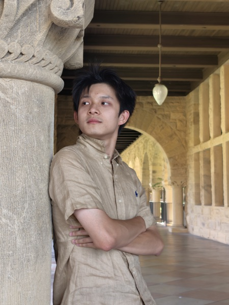

Agent Harnesses & Skills
Reusable Claude and GPT/Codex skills, persistent goal loops, checkpoints, retries, and human approval gates for reliable multi-step execution.
Claude CodeCodexworkflow design

Hong Kong · Stanford
Quantitative research · world models for finance · generative methods
My work sits at the intersection of deep reinforcement learning, world models, robust decision-making, and quantitative finance. At HKUST, I am developing three research lines with Prof. Daniel P. Palomar, Prof. Nian Si, and Prof. Tony Cho. I am also the Co-Founder & CTO of AlphaFlow, where I lead the technical development of MicroWorld.
I'm an undergraduate at the Hong Kong University of Science and Technology, majoring in Risk Management & Business Intelligence with an Extended Major in Artificial Intelligence and an Honors Track in Mathematics. In 2026 I'm a visiting student at Stanford, taking stochastic processes, machine learning, and convex optimization while looking for research collaborations at the intersection of reinforcement learning, generative models, and decision-making under uncertainty.
My background started in physics — I placed 92nd nationally in the Tsinghua University Physics Climbing Program, roughly gold-medal level on the Chinese Physics Olympiad track — before moving toward stochastic calculus, convex optimization, and machine learning applied to financial markets.
My goal is to turn world-model research into deployed investment systems and build AlphaFlow into the largest hedge-fund company in Asia-Pacific within the next decade.
I build the systems around foundation models—not only prompts—including reusable workflows, tool integrations, parallel execution, persistent context, and evaluation loops. I use these capabilities across research, software delivery, literature audits, and evidence-grounded decision work.
Reusable Claude and GPT/Codex skills, persistent goal loops, checkpoints, retries, and human approval gates for reliable multi-step execution.
Model Context Protocol integrations, plugin-based tools, structured outputs, browser/computer-use automation, and local file, shell, and web workflows.
Parallel research and implementation with isolated write scopes, explicit handoffs, shared state, and integration checks for concurrent agents.
Long-context compression into durable memory and decision records, plus regression checks and evidence-bound evaluations for agent outputs.
Studies whether a DeepLOB-style model can forecast the full conditional distribution of short-horizon returns rather than only an up/flat/down label. The work has reproduced the FI-2010 classification baseline and built an end-to-end continuous-return density pipeline on raw order-book data. Current pilots show that strong unconditional heavy-tail baselines remain difficult to beat, so the next step is to isolate whether the bottleneck lies in the signal, target, backbone, or distributional head.
Develops and stress-tests ideas in distributionally robust reinforcement learning, average-reward control, and heavy-tail robustness. The research program uses preregistered experiments and null tests to separate structural results from trading claims; it includes calibrated uncertainty sets, certified computation, negative evidence on crisis-timing overlays, and a pilot on robust estimation under heavy-tailed rewards.
Studies how reliably language models extract decision-relevant signals from SEC filings and earnings disclosures. The project combines a large-scale model-response pipeline with semantic-consistency metrics and by-question statistical analysis, focusing on when hallucination and inconsistency make a plausible answer unsuitable as quantitative-model input.
As Co-Founder & CTO of AlphaFlow, I lead the research and technical roadmap for MicroWorld: an early-stage, multi-agent market world model designed to represent how institutional constraints, information, and interacting policies propagate through markets. The near-term focus is reproducible event-risk and stress-testing workflows for professional investment teams; the long-term goal is a deployable world-model foundation for investment research and portfolio decisions.
MicroWorld is currently a research simulator and evaluation program. Its simulated behavior is not yet evidence of forecasting performance or real-market commercial validation.
Stanford undergraduate research project, advised by Jehangir Amjad. An SDE-based world-model formulation for markets — encoder, latent dynamics, and controller — extending the Ha & Schmidhuber world-model architecture with mean-field-game and stochastic-control structure. Covers Itô-integral state evolution, a hierarchical mean-field-game layer, and Lyapunov stability analysis of market regime transitions. Drafted as a theory paper targeting quantitative-finance journals.
Generative search over discrete factor structures for robust alpha discovery in noisy financial time series, submitted on WorldQuant's BRAIN platform. Achieved IC = 0.148 out-of-sample, with an emphasis on reducing spurious correlation and factor decay relative to correlation-based objectives.
A modular Python framework for evaluating systematic trading strategies against live and historical market data, built to support rapid iteration on the alpha-mining and world-model work above.
I'm always happy to talk about world models, generative methods, or quantitative finance research — reach out by email or connect on LinkedIn.